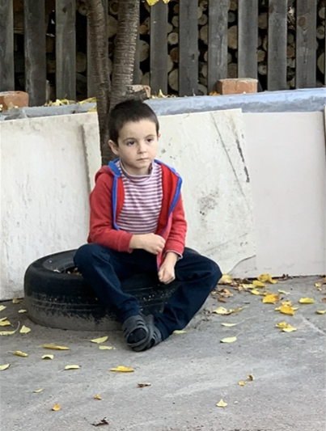
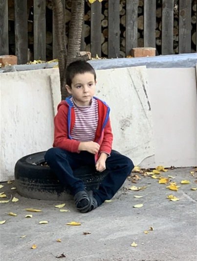

Skolens Solidaritetsaksjon:
Vi fra Gand videregående skole jobber sammen for å hjelpe THK-stiftelsen i Ukraina.
Målet vårt er å samle inn penger, for å hjelpe og forandre livene til de som trenger det mest.
Elever og lærere på skolen er med, og deltar aktivt i ulike arrangementer for å støtte prosjektet.
Dette har vi på Gand gjort i 25 år nå, noe som vi er veldig stolte av
Totalbeløp Samlet Inn:
Vi er stolte av å si at Gand videregående skole har samlet inn mellom 2,8 og 3 millioner kroner.
Prosjekter i Ukraina som er hjulpet av Skolen:
Mor Barn Senteret:
Vi har støttet et barnehjem i Korosten, ledet av Olena, som har gitt trygghet for 38 barn i alderen 0-18 år.
Fritidssenter i Ovruch:
Gjennom 5 år har våre bidrag opprettholdt driften av et aktivt senter, inkludert engelskopplæring for barna.
Håpets Kilde:
Vårt støtteprosjekt har skapt et hjem for psykisk og fysisk syke barn med livlig aktivitet.
Ungdomshjem for Gutter og Jenter:
Støtte til ungdom som tidligere bodde på "Mor Barn Senteret", nå bor og klarer seg selv med Olena som leder.
Mødrehjem:
Et hjem for unge gravide, som dessverre ble et tilfluktssted for flyktninger fra Øst-Ukraina etter krigen brøt ut.
Familiebarnehjem:
Tre "vanlige familier" tar til seg 8-10 barn hver, takket være våre bidrag.
Aktiviteter i Korosten:
Fra fritidsklubber til gokart, ballett og mer - vi har vært stolte over å støtte mangfoldige aktiviteter for barn og ungdom i Korosten.


 
